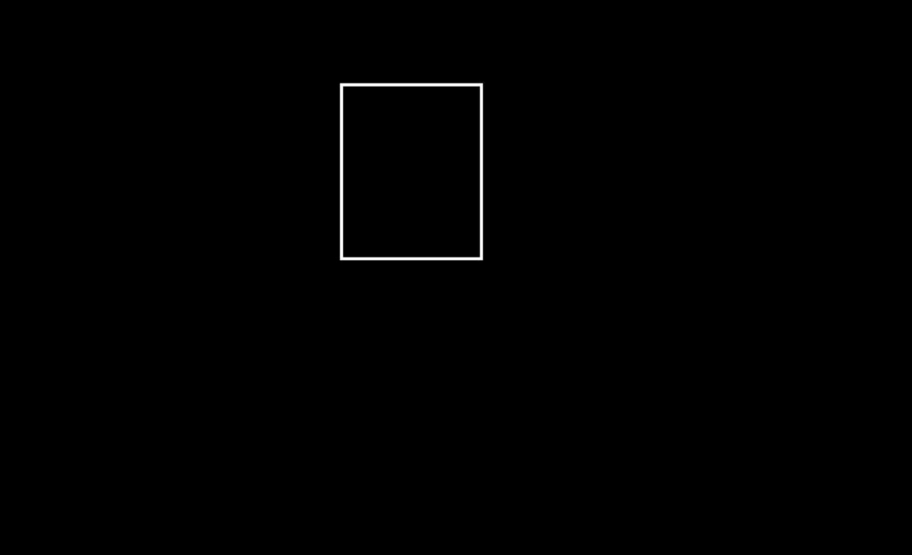
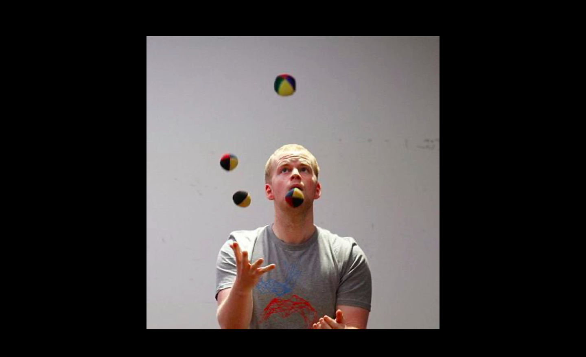
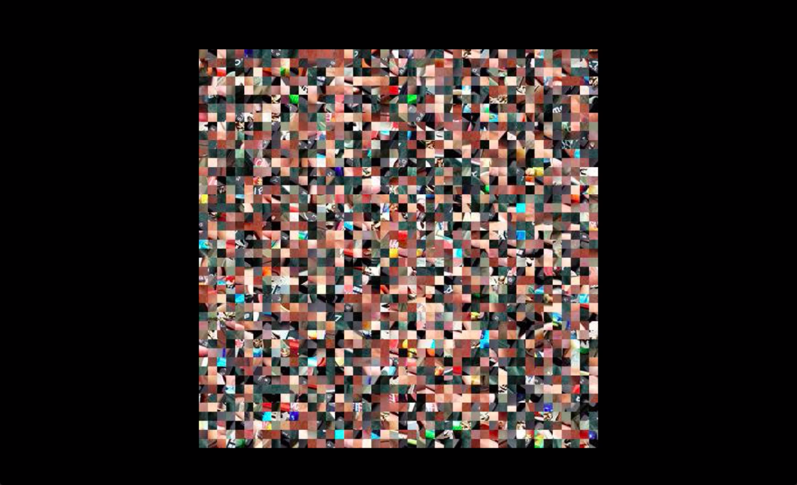
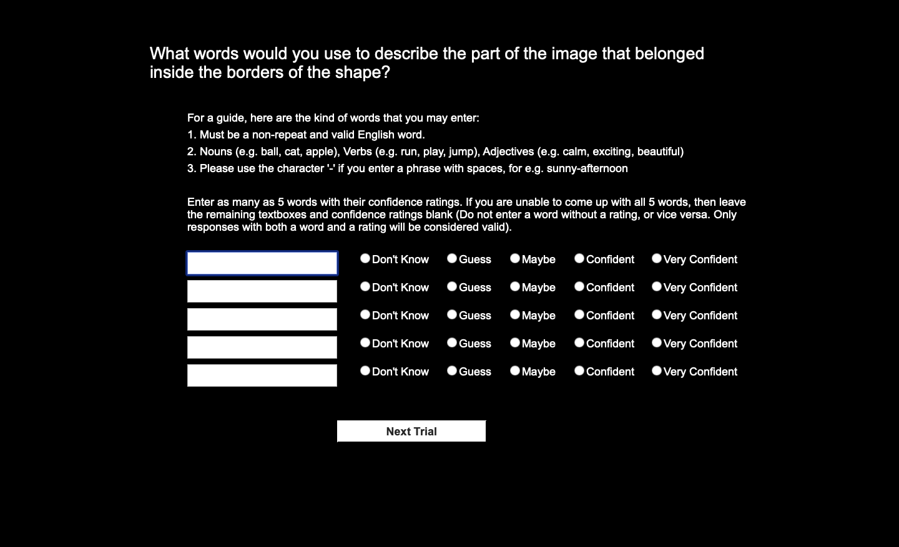
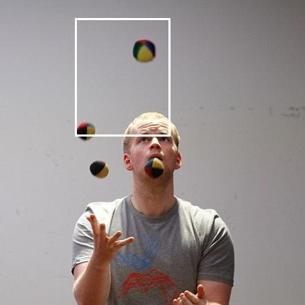

Practice Round
You are going to familiarise yourself with this experiment in
In each trial,
-
You will see a cross at the center of the screen. Please focus your eyes on the cross and do not move your eyes.
-
In a few moments, a shape will flash somewhere on the screen. An image will be presented immediately after this, before a random masking pattern is displayed (Remember to keep your eyes fixated on the center of the screen).
  
-
You will answer a question related to a specific part of the image (not the masking pattern) that is indicated by the preceding shape. See below for an example.

-
Example: the question will only relate to the part of the image that belongs inside the borders of the preceding shape (This image is only used for demonstration purposes and will not be presented in this way).

If you are ready to start the practice trials, press [Space] to continue.